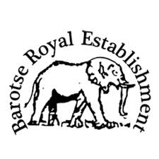
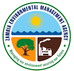
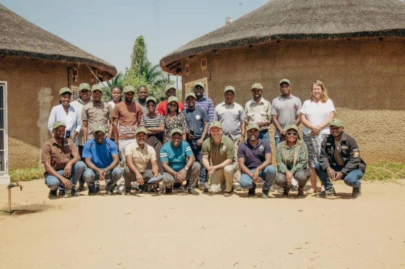

All Regulatory Approvals Secured

Barotse Royal Establishment Ministry of Green Economy

Environmental Management Agency Department of Forestry
 Ministry of Livestock
Ministry of LivestockThe Barotse Rangelands for Restoration Project, initiated by the Barotse Royal Establishment, brings transformative change to Western Zambia. Through community-led regenerative livestock systems and science-based rangeland management, we create lasting impact. Our approach combines co-design with adaptive grazing and proven restoration practices to ensure success. With rigorous monitoring, we deliver measurable gains across three key areas: farmer livelihoods, climate outcomes, and biodiversity recovery.
Pro Green Earth is a landscape restoration initiative focused on transforming the Barotse rangelands through innovative, community-led approaches. Our mission is to restore degraded landscapes while improving the livelihoods of local communities.

We implement comprehensive rangeland restoration programs that combine traditional knowledge with modern scientific practices. Our approach focuses on creating lasting positive impact for both the environment and local communities.
Implementing sustainable farming practices that restore soil health and biodiversity.
Working closely with local communities to ensure sustainable, long-term success.
Generating high-integrity carbon credits through verified restoration projects.
Creating economic opportunities through sustainable land management.

Barotse Royal Establishment
Environmental Management Agency Ministry of LivestockInterested in learning more about this project or partnering with us? Our team is ready to discuss collaboration opportunities and next steps.